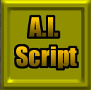
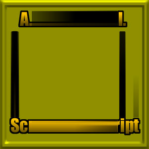
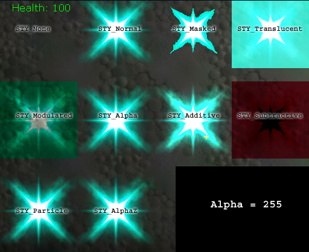
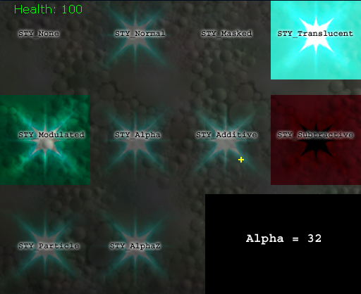

Canvas Reference
Last updated by Michiel Hendriks, applied v3323 changes to the canvas. Previously updated by Albert Reed (DemiurgeStudios?), because Chris was paste-happy. Original author was Chris Linder (DemiurgeStudios?).
Intro
To understand Canvas you must think of it as a state machine. The reason that most Canvas functions to do not take a draw location, a color, or a draw style is because the Canvas itself stores these variables as part of the current state. Not only are the Canvas functions affected by the current state but they can also change the state. For example most draw functions move the current position to the other side of what they drew.
The state in Canvas is contained in these variables:
var font Font; // Font for drawing text.
var float FontScaleX, FontScaleY; // Scale for DrawText & DrawTextClipped.
var float SpaceX, SpaceY; // Spacing for after Draw*.
var float OrgX, OrgY; // Origin for drawing.
var float ClipX, ClipY; // Bottom right clipping region.
var float CurX, CurY; // Current position for drawing.
var float Z; // Z location. 1=no screenflash, 2=yes screenflash.
var byte Style; // Drawing style STY_None means don't draw.
var float CurYL; // Largest Y size since DrawText.
var color DrawColor; // Color for drawing.
var bool bCenter; // Whether to center the text for DrawText.
var bool bNoSmooth; // Don't bilinear filter.
var const int SizeX, SizeY; // Zero-based actual dimensions.
var Plane ColorModulate; // sjs - Modulate all colors by this before rendering
var bool bForceAlpha; // Force all drawing to be alpha'ed
var float ForcedAlpha; // How much to force
var bool bRenderLevel; // gam - Will render the level if enabled.
You can set any of these but SizeX and SizeY. There are also set functions for some like SetPos, SetOrigin, and SetClip but these do nothing more than adjust the variables you could set yourself.
It may seem odd that OrgX/Y and ClipX/Y are not const. In most cases Org will be (0,0) and Clip will equal Size but by setting Org and Clip to other values you can use the wrapping and bounding functionality of the Canvas to clip to a smaller area.
Font can be set to anything but there are three fonts already defined in Canvas (TinyFont, SmallFont, MedFont) for quick easy use.
SpaceX and SpaceY are used to give additional padding after a draw function that changes CurX and CurY.
For a more detailed description of Style and DrawColor see SetDrawColor.
Native
These are C++ function you can call from script.
StrLen
StrLen( coerce string String, out float XL, out float YL )
StrLen sets XL and YL to be the length and height of the given string if it were to be drawn. This function considers wrapping. Note: the value of FontScaleX and FontScaleY have a direct influence on the result.
| String | The string to determine the length of |
| XL | Out value of width of the string |
| YL | Out value of the height of the string |
DrawText
DrawText( coerce string Text, optional bool CR )
This draws the given text to the screen at the current location. The text will wrap if gets to Canvas.ClipX (usually the right side of the screen).
| Text | The text to write |
| CR | CR stands for Carriage Return and if set to true, the current drawing position will move down to the next line after the call. CR defaults to true if it is omitted. |
DrawTile
DrawTile( material Mat, float XL, float YL, float U, float V, float UL, float VL )
DrawTile draws an arbitrary part of a material to the canvas at and arbitrary size. Its parameters, which are all given in pixels are as follows:
| Mat | Source Material |
| XL | Display Width |
| YL | Display Height |
| U | Upper left X position of the Material to start at |
| V | Upper left Y position of the Material to start at |
| UL | Width of the part of the Material to draw |
| VL | Height of the part of the Material to draw |
The DrawTile call will draw the material starting wherever CurX and CurY are. For example if I have a texture `MyTex' that is 128 by 64 calling:
SetPos(0,0);
DrawTile(MyTex, 100, 100, 64, 0, 64, 32);
will draw the upper right quadrant of the texture (a 64x32 chunk) in a 100x100 square in the upper left hand corner of the screen.
DrawActor
DrawActor( Actor A, bool WireFrame, optional bool ClearZ, optional float DisplayFOV )
This draws the given actor at its location relative to the player (the pawn of the player to be precise). This is how the first person weapons are drawn.
| WireFrame | If this is true, the actor is drawn in wireframe, otherwise it drawn as mesh with two-sided polys |
| ClearZ | If ClearZ is true, the actor will draw on top of everything, otherwise it will use the Z buffer to determine how it should draw |
| DisplayFOV | This is the FOV the actor will be drawn with |
DrawTileClipped
DrawTileClipped( Material Mat, float XL, float YL, float U, float V, float UL, float VL )
This is just like DrawTile but if the destination draw area is partly off-screen it will be clipped so nothing is drawn off-screen. This function will run faster than DrawTile if the destination is partly off-screen but very slightly slower if the destination is entirely on screen.
| Mat | Source Material |
| XL | Display Width |
| YL | Display Height |
| U | Upper left X position of the Material to start at |
| V | Upper left Y position of the Material to start at |
| UL | Width of the part of the Material to draw |
| VL | Height of the part of the Material to draw |
DrawTextClipped
DrawTextClipped( coerce string Text, optional bool bCheckHotKey )
This is like DrawText but it does not wrap.
| Text | The text to write |
| bCheckHotKey | if you set this to true (it defaults to false) all characters preceded by an `&' will be underlined like for menu hot keys |
TextSize
TextSize( coerce string String, out float XL, out float YL )
TextSize is like StrLen but it is clipped; there is no wrapping. Just like with StrLen the values of FontScaleX and FontScaleY are taken into account.
| String | The string to determine the length of |
| XL | Out value of width of the string |
| YL | Out value of the height of the string |
DrawPortal
DrawPortal( int X, int Y, int Width, int Height,
actor CamActor, vector CamLocation, rotator CamRotation,
optional int FOV, optional bool ClearZ )
DrawPortal renders the scene another time from a different perspective and draws the results to a rectangle on the canvas. DrawPortal is a MAJOR hit to the framerate; one call to DrawPortal cuts the frame rate by more than half so a scene running at 60 fps can be cut to 18 fps. Also, calling DrawPortal does not effect the current canvas position.
| X | the start X position of the draw portal rect |
| Y | the start Y position of the draw portal rect |
| Width | the width of the draw portal rect |
| Height | the height of the draw portal rect |
| CamActor | The camera actor for the scene - can be any actor really |
| CamLocation | The camera location |
| CamRotation | The camera rotation |
| FOV | the Field Of View for the scene |
| ClearZ | If ClearZ is true, the portal will draw on top of everything, otherwise it will use the Z buffer to determine how it should draw. Note: changing this didn't seem to make any difference |
WorldToScreen
vector WorldToScreen( vector WorldLoc )
Returns the location on the canvas where the WorldLoc is currently displayed.
GetCameraLocation
GetCameraLocation( out vector CameraLocation, out rotator CameraRotation )
Returns the world location of the camera.
| CameraLocation | Will receive the location of the camera |
| CameraRotation | This will get the current rotationof the camera |
SetScreenLight
SetScreenLight( int index, vector Position, color lightcolor, float radius )
Adds a light to be used on the actor that is being drawn by DrawScreenActor.
| index | The slot to use for the light, there are only 8 available slots thus the value ranges from 0 to 7 |
| position | The screen position of the light |
| lightcolor | The light color |
| radius | The light radius |
SetScreenProjector
SetScreenProjector( int index, vector Position, color color, float radius, texture tex )
This function is not implemented.
DrawScreenActor
DrawScreenActor( Actor A, optional float FOV, optional bool WireFrame, optional bool ClearZ )
does the same as DrawActor except that the drawing of the actor is influenced by the screen lights and projectors set by SetScreenLight and SetScreenProjector.
| FOV | This is the FOV the actor will be drawn with |
| WireFrame | If this is true, the actor is drawn in wireframe, otherwise it drawn as mesh with two-sided polys |
| ClearZ | If ClearZ is true, the actor will draw on top of everything, otherwise it will use the Z buffer to determine how it should draw |
Clear
Clear(optional bool ClearRGB, optional bool ClearZ)
This functions clears the Z buffer and\or color (both default to true).
WrapStringToArray
WrapStringToArray(string Text, out array OutArray, float dx, optional string EOL)
This function will take string and divide it into many strings based on how the text would line wrap given the current font and the given width, dx.
| Text | The source text to divide up |
| OutArray | An array of strings that are each line of the wrapped text |
| dx | The width of the text area to wrap to |
| EOL | The end of line character used to force an end of line (defaults to ""). Though this is a string, only the first character is used. "\" for example, would be a good input for this field |
WrapText
WrapText( out String Text, out String Line, float dx, Font F, float FontScaleX )
This functions breaks a line into two parts on a set width while leaving words intact.
| Text | Text to wrap, after the call it will contain the remainder of the text. |
| Line | The wrapped text, e.g. the part taken from the input that fits within the width. |
| dx | Maximum text width before wrapping. |
| F | The font to use. |
| FontScaleX | The X scale of the font. |
DrawTilePartialStretched
DrawTilePartialStretched( Material Mat, float XL, float YL )
This is like a combination between stretching and scaling. The whole material will always be shown unlike with DrawTileStretched when the drawing size is smaller than the material size. The material will be scaled to fit the destination after wich it's strechted.
| Mat | The Material to draw |
| XL | The width to which you wish to stretch the Material |
| YL | The height to which you wish to stretch the Material |
DrawTileStretched
DrawTileStretched(material Mat, float XL, float YL)
This function takes a Material stretches it to the given size (XL, YL) without scaling it. This is done by repeating pixels in the middle of the image to fill the sections between the corners if the stretch size is larger than the image. If the stretch size is smaller the corners are cropped in the middle and refitted together. The following images illustrate DrawTileStretched called on a 128x128 image:
Canvas.DrawTileStretched(TestTexture, 128, 128);

Canvas.DrawTileStretched(TestTexture, 100, 100);
Canvas.DrawTileStretched(TestTexture, 300, 300);

| Mat | The Material to draw |
| XL | The width to which you wish to stretch the Material |
| YL | The height to which you wish to stretch the Material |
DrawTileJustified
DrawTileJustified(material Mat, byte Justification, float XL, float YL)
DrawTileJustified draws the given Material at the current position in a box XL pixels long and YL pixels high. If the box is the same aspect ratio as the Material, the image will be stretched to fill the whole box. Otherwise the Material will be stretched to fill one dimension and justified on the other.
| Mat | The Material to draw |
| Justification | The justification of the image in the case where the box defined by XL and YL is a different aspect ratio than Mat. 0 = left/top, 1 = center, 2 = right/bottom |
| XL | The X size of the box in which to draw Mat |
| YL | The Y size of the box in which to draw Mat |
DrawTileScaled
DrawTileScaled(material Mat, float XScale, float YScale)
This function draws the given Material at the current location scaled based on the ratios XScale and YScale.
| Mat | The Material to draw |
| XScale | Ratio of original X size |
| YScale | Ratio of original Y size |
DrawTextJustified
DrawTextJustified(coerce string String, byte Justification, float x1, float y1, float x2, float y2);
DrawTextJustified draws the given text with no wrapping in a box define by x1 and y1 as the upper left hand corner and x2 and y2 as the lower right hand corner. This functions centers the text vertically and justifies the text horizontally based on Justification (0=left,1=center,2=right). If the text is longer than the given space it will be clipped. This function also mucks with the current position and you should reset it to where you want after calling DrawTextJustified.
| String | The string to write |
| Justification | The horizontal justification of the text (0=left, 1=center, 2=right) |
| x1 | The left side of the box in which to draw |
| y1 | The top of the box in which to draw |
| x2 | The right side of the box in which to draw |
| y2 | The bottom of the box in which to draw |
DrawActorClipped
DrawActorClipped( Actor A, bool WireFrame,
float Left, float Top, float Width, float Height,
optional bool ClearZ, optional float DisplayFOV)
Just like DrawActor except the actor is clipper to fit the width\height. Use this function to only partially draw an actor on the canvas.
| WireFrame | If this is true, the actor is drawn in wireframe, otherwise it drawn as mesh with two-sided polys |
| ClearZ | If ClearZ is true, the actor will draw on top of everything, otherwise it will use the Z buffer to determine how it should draw |
| DisplayFOV | This is the FOV the actor will be drawn with |
Script
These are script functions. Some functions adjust the state of the Canvas while others wrap the native draw functions for easier use.
Reset
event Reset()
This function resets all the canvas variables like the current color, position, origin, and clip.
SetPos
final function SetPos( float X, float Y )
SetPos sets the position of drawing "cursor" by changing CurX and CurY.
SetOrigin
final function SetOrigin( float X, float Y )
This sets the max upper left hand corner for canvas drawing by changing OrgX and OrgY. In most cases this is (0,0) but is some cases, drawing wrapped text for example, you might one to change this temporarily. Also see SetClip.
SetClip
final function SetClip( float X, float Y )
This sets the lower left hand corner for canvas drawing by changing ClipX and ClipX. In most cases this will be the size of the window but like SetOrigin sometime you might want to change it.
DrawPattern
final function DrawPattern( material Tex, float XL, float YL, float Scale )
Using fancy texture position values, DrawPattern draws a Material repeated like a pattern in the given area. DrawPattern starts at the current position and draws to a box with length XL and height YL.
| Tex | The Material to draw |
| XL | The width of the box to draw to |
| YL | The height of the box to draw to |
| Scale | This is the inverse of the texture scale. 0.5 will draw the texture twice as large as it normally is and consequently the pattern will repeat less. |
DrawIcon
final function DrawIcon( texture Tex, float Scale )
This will draw a Texture at the current location with the given scale.
| Tex | The Texture to draw |
| Scale | The scale to draw the Texture at |
DrawRect
final function DrawRect( texture Tex, float RectX, float RectY )
DrawRect draws a texture at the current location with the given width and height. This does the same thing as DrawTileStretched but is less flexible because it only takes a Texture not a Material and is slightly slower.
SetDrawColor
final function SetDrawColor(byte R, byte G, byte B, optional byte A)
This function sets the draw color with an optional alpha. The color is very straight forward; it will tint whatever is drawn with that color. The alpha is not so simple mainly because it is not used in all cases. It will be used if Canvas.Style is ERenderStyle.Normal, ERenderStyle.STY_Masked, ERenderStyle.STY_Alpha, ERenderStyle.STY_Additive, ERenderStyle.STY_Particle, or ERenderStyle.STY_AlphaZ.
These two simple diagrams illustrate the effect of alpha on different draw styles.


MakeColor
static final function Color MakeColor(byte R, byte G, byte B, optional byte A)
MakeColor returns a color. See SetDrawColor for more information on the use of colors.
DrawVertical
final function DrawVertical(float X, float height)
DrawVertical draws a vertical line 2 pixels wide at the given X position with a length of height. This uses the current Y position for the start of the line.
DrawHorizontal
final function DrawHorizontal(float Y, float width)
DrawHorizontal draws a horizontal line 2 pixels high at the given Y position with a length of width. This uses the current X position for the start of the line.
DrawLine
final function DrawLine(int direction, float size)
DrawLine draws a line starting at the current position in one of the orthogonal directions of the given length. The line for this function does not always start and end exactly where you tell it to. It is also important to note that this function does not affect the current position.
| direction | which orthogonal direction to draw the line in. 0 = Up, 1 = Down, 2 = Left, 3 = Right |
| size | the length of the line to draw |
DrawBracket
final simulated function DrawBracket(float width, float height, float bracket_size)
This draws a pair of "brackets" that enclose an area of the given width and height. The lines drawing the brackets are of size bracket_size. If bracket_size is larger than the give width and height it will draw a tic-tac-toe pattern. One might wonder about the general usefulness of this function... yes one might wonder.
DrawBox
final simulated function DrawBox(canvas canvas, float width, float height)
This function draws a box of the given width and the given height. I have no idea what this function takes a canvas when it is a function of canvas. I suspect this function is very old.
DrawScreenText
simulated function DrawScreenText (String Text, float X, float Y, EDrawPivot Pivot)
Draws text on the screen from a certain point.
| X | X position as a percentage of the complete screen width. |
| Y | The Y position as a percentage of the screen height. |
| Pivot | The pivot of the text. If the value is DP_UpperLeft the text is draw at the given X or Y. Otherwise the right X and Y are calculated from to the text width and height. |